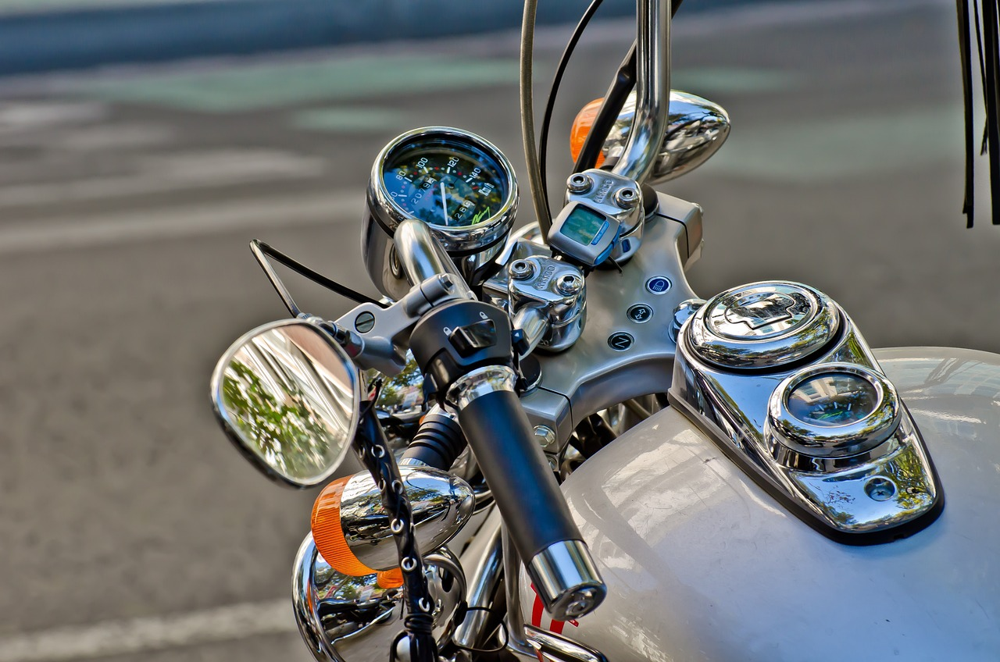

Cómo mejorar el rendimiento de tu moto
Mejorar el rendimiento de tu moto es una meta alcanzable que puede transformar tu experiencia de conducción, proporcionando mayor potencia, eficiencia y seguridad. El primer paso para lograrlo es realizar un mantenimiento regular y riguroso. Cambiar el aceite del motor según las recomendaciones del fabricante es crucial, ya que un aceite limpio y de buena calidad asegura una lubricación adecuada de las partes móviles del motor, reduciendo el desgaste y la fricción interna. Esto no solo mejora la eficiencia del motor, sino que también prolonga su vida útil. Además, revisar y limpiar el filtro de aire permite una mejor combustión, ya que un filtro limpio facilita el flujo de aire hacia el motor.
Mantener la cadena de transmisión correctamente ajustada y lubricada es esencial para el rendimiento y la seguridad de la moto. La cadena no debe estar ni demasiado tensa ni demasiado floja. Una cadena demasiado tensa puede causar un desgaste prematuro en los engranajes y la cadena misma, mientras que una cadena floja puede salirse y causar un accidente. Revisa la tensión de la cadena regularmente y ajústala según las especificaciones del fabricante. Además, utiliza un lubricante específico para cadenas de motocicletas y aplícalo después de cada limpieza de la cadena.
La presión de los neumáticos afecta directamente el rendimiento de la moto, especialmente en términos de manejo y eficiencia de combustible. Revisa la presión de los neumáticos regularmente y ajústala según las especificaciones del fabricante. Neumáticos inflados correctamente mejoran la tracción y el manejo, además de reducir la resistencia al rodaje, lo que puede mejorar el consumo de combustible. Recuerda que la presión debe ser revisada con los neumáticos fríos para obtener una lectura precisa. Además de la presión, es importante revisar el estado general de los neumáticos, buscando signos de desgaste desigual, cortes o deformaciones.
El sistema de escape juega un papel importante en el rendimiento de la moto al gestionar la salida de gases del motor. Considera la posibilidad de instalar un sistema de escape de alto rendimiento. Estos sistemas están diseñados para mejorar el flujo de gases de escape, lo que puede aumentar la potencia del motor y reducir el peso de la moto. Sin embargo, asegúrate de que cualquier modificación cumpla con las regulaciones locales y no afecte negativamente otros aspectos del rendimiento del vehículo. Mantén el sistema de escape limpio y libre de obstrucciones, ya que un escape obstruido puede reducir significativamente el rendimiento del motor y aumentar el consumo de combustible.
Un sistema de suspensión bien ajustado puede mejorar notablemente el manejo y la estabilidad de la moto. Ajustar la suspensión según tu peso y estilo de conducción puede mejorar significativamente el rendimiento. Una suspensión demasiado dura o blanda puede afectar negativamente la estabilidad y la capacidad de la moto para absorber impactos. Consulta el manual del propietario o a un profesional para realizar los ajustes necesarios. Realiza un mantenimiento regular de los componentes de la suspensión, como los amortiguadores y las horquillas, revisando si hay fugas de aceite y reemplazando los componentes desgastados para mantener una conducción suave y estable.